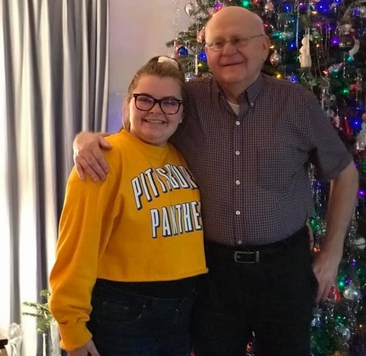
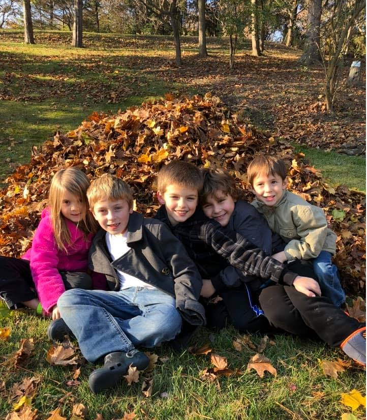
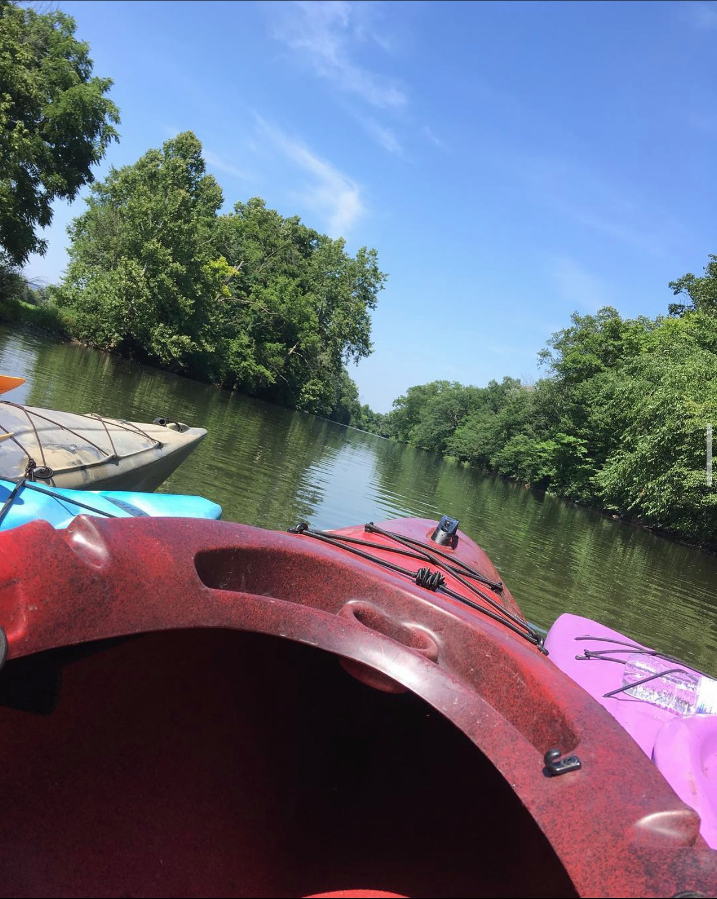
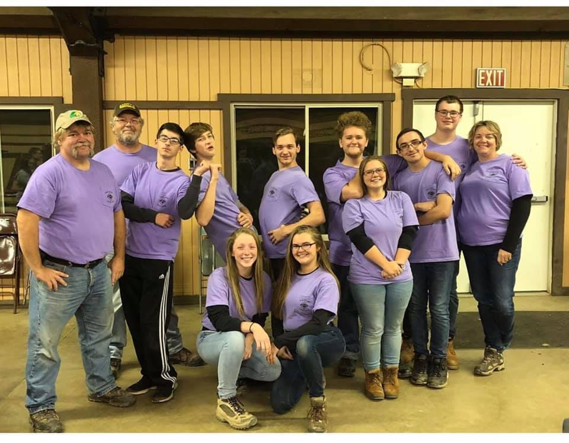
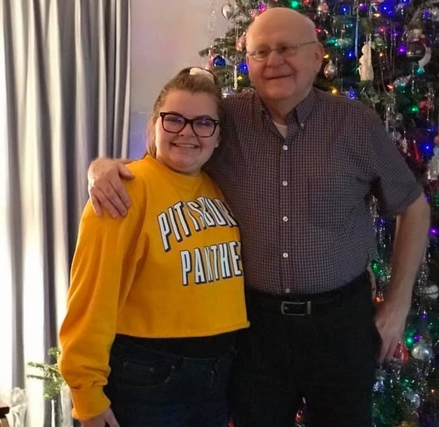
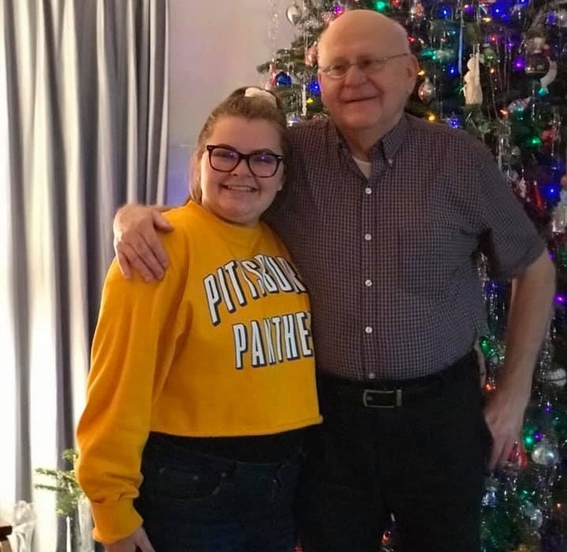

My career started as a really young child, always helping others in many walks of life. But i never really realized until in eight grade when i went to a prosthetics seminar and instantly fell in love with the idea of designing things to help others succeed. I spent the summer after the eigth grade year at the Pennsylvania College of Technology living on campus for a 3-D printing and design summer camp. I left that camp knowing i was going back the next year, and spent the rest of my teenaged career taking design classes through my high school and local college.
Family and Home

To me: Family are the people around you who make you the happiest. It can be blood relation or friendships.
All of the poeple you see in the above photos motivated me hard to always do what makes me happiest. Those people are my blood family and closest relationships and they fill up the space in my life that i call home.
Family is the most important aspect of my life.

Entertainment
As i read the word entertainment i think about things to do and places to go with the people i love most in the world. My favorite forms of entertainment is to take a weekend out in the woods kayaking, hiking, or spending time away from electronics. While college keeps me in the electronic world, i would prefer to be away from media and more with the entertainment i prefer.

Community
Community to me is a place where people come together to go through life together, and it has been a huge part of my life in many ways. As a child community was just sports, girl scouts, and awana, all things that i liked. But, as i grew up the communities grew up with me. Throughout the rest of my life i have been in countless organizations spanning multiple different genres of life. But I have found that true community is coming together, doing something together, and having fun together.

School
Schooling for me was always easy and never really mattered, until the eigth grade. From the eighth grade I have tried to pushed myself and bettered myself through my studies. I pushed myself to take honors courses, and college courses throughout all of high school and constantly pushed myself to have a good understanding and footing in the subject matters.
Not only is school the 8:00am-3:30pm building i went to, it is everything that i learned in life.
Schooling is the fire department courses, and wilderness first aid courses that i took for months. But it is also the at home "how to cook" and "how to be a good caregiver" classes.


 
